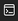

操作方法
●Z, SPACE, ENTER：
決定、回転
●X, ESC, バックスペース：
ホールド
●矢印キー：
移動（上キーで即置き）
攻略情報
各項目をクリックすると情報を表示します。再度クリックすると情報を非表示にします。
・クリア条件
10回連続でI型（水色）テトリミノを出すこと
・1st HINT
「トリステ」では、次にどのテトリミノを落下させるかを決める処理に、「Math.random」というJavaScriptの関数を使用しています。Math.random関数は、0から1未満の乱数を生成してくれるよ！
・2nd HINT
次にどのテトリミノを落下させるかを決めるときに使用する式は、「トリステで登場するテトリミノの種類 * Math.random()」です！次に、この式の計算結果の小数点以下を切り捨てる処理を行うことによって、次にどの色のテトリミノを落下させるかが決まります！「0=赤、1=橙、2=黄、3=黄緑、4=水、5=青、6=紫」のように対応しています！なら...
・3rd HINT
まずは演習画面の好きな場所を右クリックして、開発者ツールを開きましょう！その後、開発者ツールに表示されているのアイコンをクリック。（このアイコンはEdgeを使用した場合に表示されるものです。）次に、「>」の部分をクリックしてからMath.random = function () { return 4/7 }と入力し、ゲームを開始すると...?また、「4/7」の分子の値を0〜6の中の好きな数字に変えてゲームを開始すると...?
この演習の解説を見る
×
↑
〇
←
↓
→